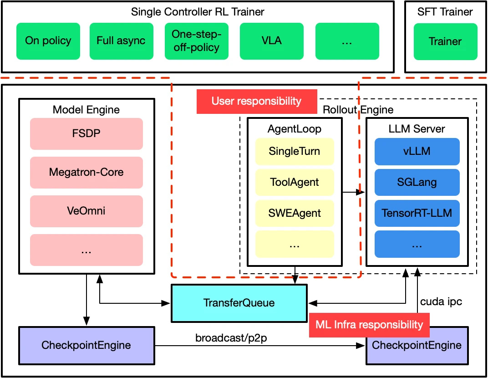
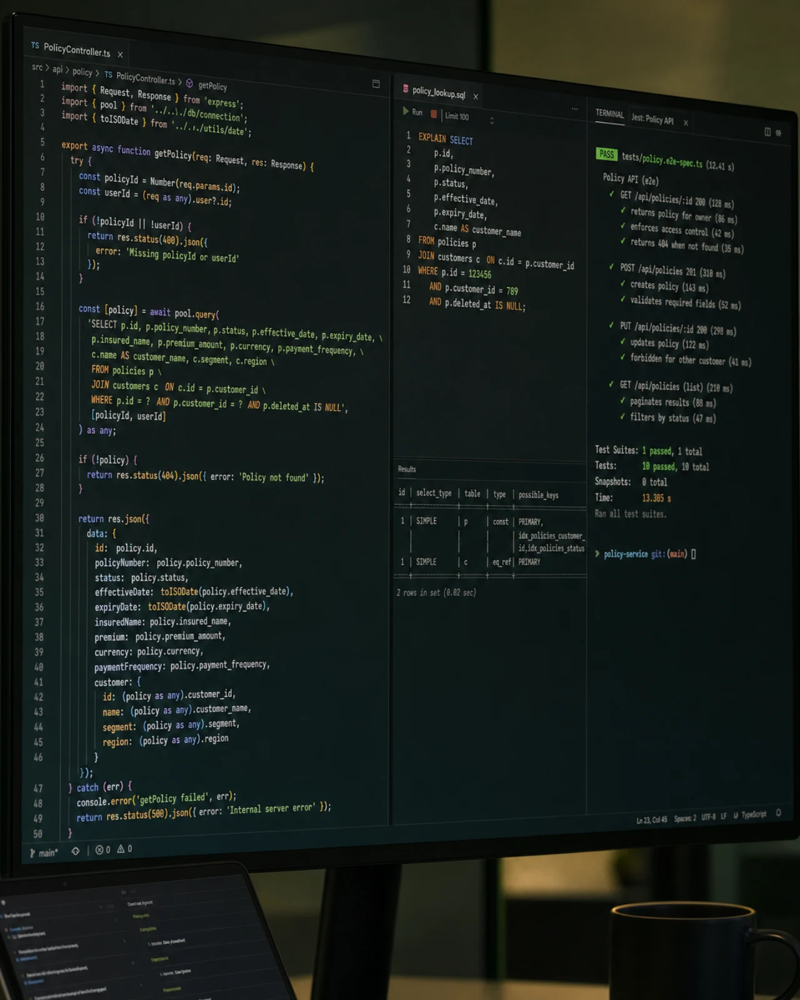
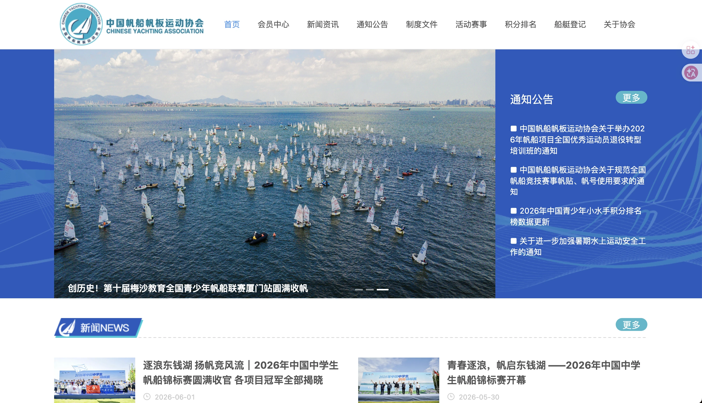
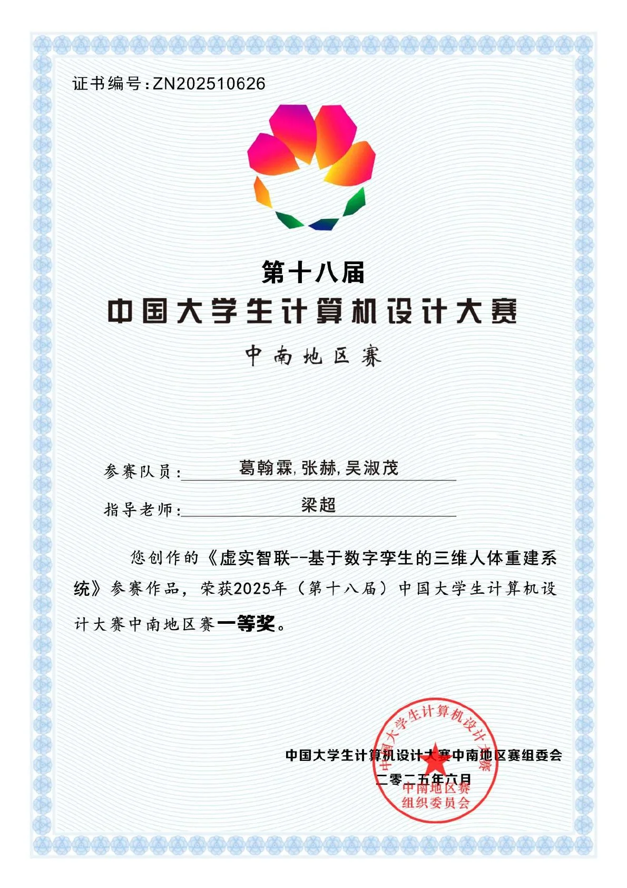

OPD + RL 智能体后训练
围绕 OPD + RL 开展智能体后训练研究，在开源 benchmark 上取得 SOTA。
开源 benchmark SOTA
Agent 开发、后训练算法工程师
武汉大学软件工程背景
围绕 OPD + RL 开展智能体后训练研究，在开源 benchmark 上取得 SOTA。
开源 benchmark SOTA
在字节跳动国际商业化部门从事 Agent 开发，将 Claude Code 内核接入公司内部 Agent，适配业务流程。
开展 Skill 优化与 Bad Case Studio 相关开发，围绕实际业务完善智能体工作流。
基于 Verl 重写工具调用循环，识别 Python Markdown 代码块并触发安全执行，以 SFT 与 GRPO 增强垂直领域多步推理。
从模型训练延伸到工具协议、沙箱执行和推理评估，将推理能力接入可执行的智能体系统。
工具调用循环、安全执行和推理评估共同构成可验证的研发过程。

VeRL 官方架构参考参与需求评审、业务表结构和 RESTful API 设计，完成页面联调、测试与部署。用 EXPLAIN、联合索引和查询重构处理慢查询。
编写并调优复杂 SQL，与前端核对页面交互和接口契约，覆盖功能测试、回归测试、部署及问题跟踪。
覆盖需求评审、技术方案、数据库设计、编码、联调、测试与部署的完整研发周期。

武汉泰康科技有限公司持续迭代协会官网，接入支付宝与微信支付。以锁机制、状态机和熔断策略保障关键交易链路。
围绕高流量场景设计稳定的接口、数据和降级策略，持续承担研发、维护、排障与交付。
真实生产系统，覆盖研发、维护、排障与持续交付。

中国帆船帆板运动协会围绕三维人体重建完成虚实融合系统，负责技术路线、团队协作与交付推进，以工程实现验证空间计算方案。
项目名称为「虚实智联：基于数字孪生的三维人体重建系统」。
获 2025 年计算机设计大赛中南地区赛一等奖。

虚实智联我喜欢有反馈的事情。代码会报错，球会落地，镜头会告诉你哪里拖沓。观察、调整，再试一次，这是我熟悉的节奏。
我关注 OPD + RL 后训练与智能体开发，在开源 benchmark 上取得 SOTA。2026 年 9 月 20 日起，在字节跳动国际商业化部门实习，从事 Claude Code 内核接入、业务流程适配、Skill 优化与 Bad Case Studio 相关开发。
读拍面、看重心，再决定下一步。享受单打的节奏，也重视双打里的补位、喊球和默契。
根据恢复调整重量与组数，优先保证动作质量。稳定出勤，认真对待长期状态。
先找故事落点，再选素材、音乐和节奏。愿意删掉喜欢却多余的镜头，让表达更清楚。